|
|
HELP FIND THE FOLLOWING LOCATIONS
PAGE 40
THE
CHAMPIONS: Get Me Out of Here!
(John Moxey:
June 1967)
Hemel Hempstead Civic
Centre, Dacorum
Way: From a café
across the street Sharron and Craig Sterling watch “The Carnisero”,
where Professor Anna Maria Martes
is being held from
a café across the street. That night Craig and Richard break into the
The Carnisero
and free Maria Martes.
(Identified by Ed Osborne, November 2010)
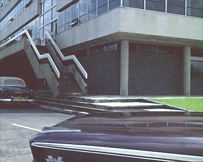
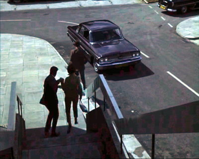

Unknown 2: The police chase Richard Barrett's motorbike into the countryside. Richard Barrett, Sharron Mcready and Craig Sterling and Professor Anna Maria Martes drive towards the San Dios fishing village. The authorities are not far behind in a police car.
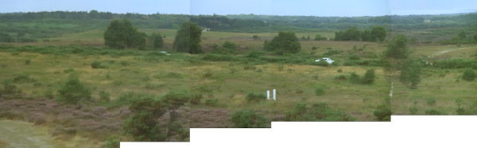
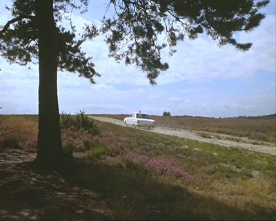
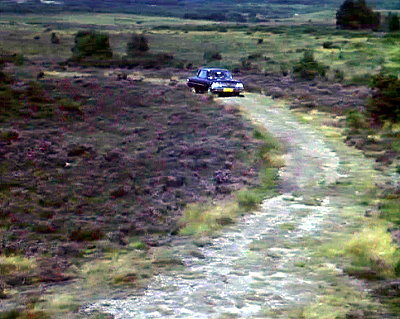
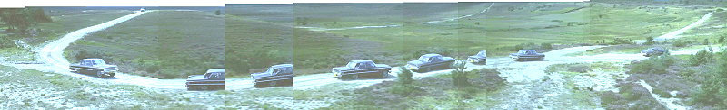
 Probably
Chobham
Common or Frensham
Common, Surrey
Probably
Chobham
Common or Frensham
Common, Surrey
Lower Merton Rise, NW3 - The fake police car drops spikes on the road to prevent Craig from following Richard from the tailors' shop.
Geoff Dodd, 10th November

Saint
Albans - Junction of Stonecross/
Saint Peters Street/
Harpenden Road -
(Identified by Andy Lawrence, February 2010)
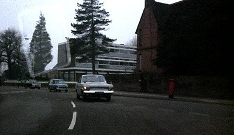
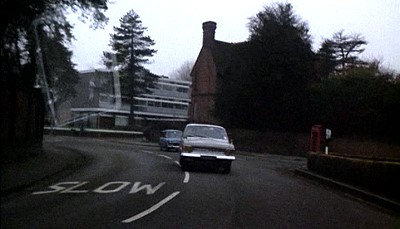
THRILLER: Kiss
Me and Die
1973
G31:
Theobalds Park, Lieutenant Ellis Way, Cheshunt
(Identified by Geoff Dodd, June 2011)
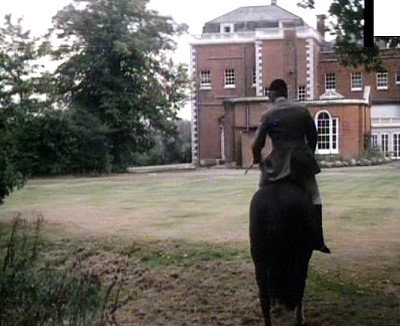
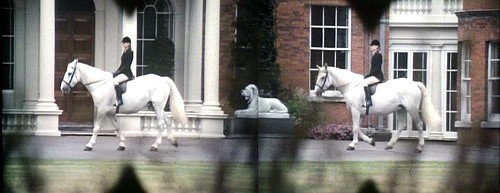
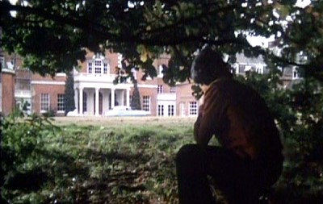
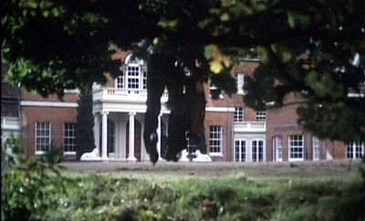
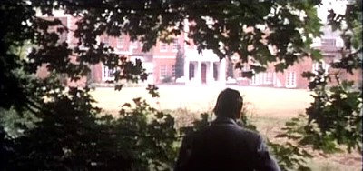
THRILLER: One deadly Owner 1973
The Pied Bull, Bulls
Cross, EN2 -
Identified by Geoff Dodd, April
2011


Forty Hall, Enfield - Identified by Geoff Dodd, April 2011
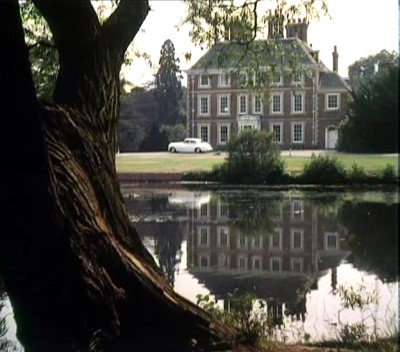
Think you know a spot? Need a bigger image? Email me.
< Previous | Index | Avengerland | Next >
Copyright © 2024 Anthony R. McKay